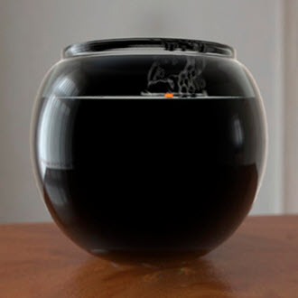
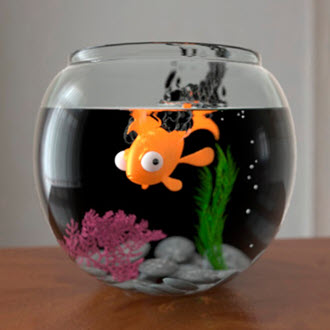
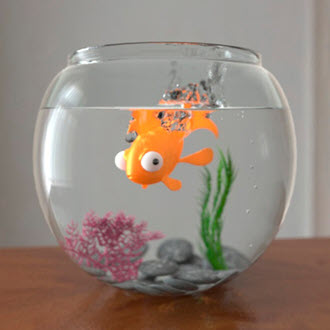

如果您在使用玻璃曲面时遇到渲染时间较长现象，请选择网格并在 standard_surface 着色器的“高级”(Advanced)部分禁用“enable_internal_reflections”。
正确的 transmission_depth 设置对于实现真实的玻璃和水效果非常重要。请记住，值越大，渲染时间就越长。
默认情况下，Arnold 使用的 transmission_depth 为 8。
|  |  |  |
| 2 | 4 | 8（默认值） |
下面的场景包含许多玻璃曲面。增大 transmission_depth 可以显现折射玻璃的更多细节。
| 2 | 4 | 6 |
当增大光线深度设置时，请确保总深度设置得足够高，以包含 transmission_depth。
总深度指定场景中任何光线的最大总递归深度（漫反射 + 透射 + 镜面反射 < 总计）。
下面是最终图像。transmission_depth 已保留为默认值 8。要进一步减小水花区域，可能需要更大的值，在这种情况下渲染显示为纯黑色。